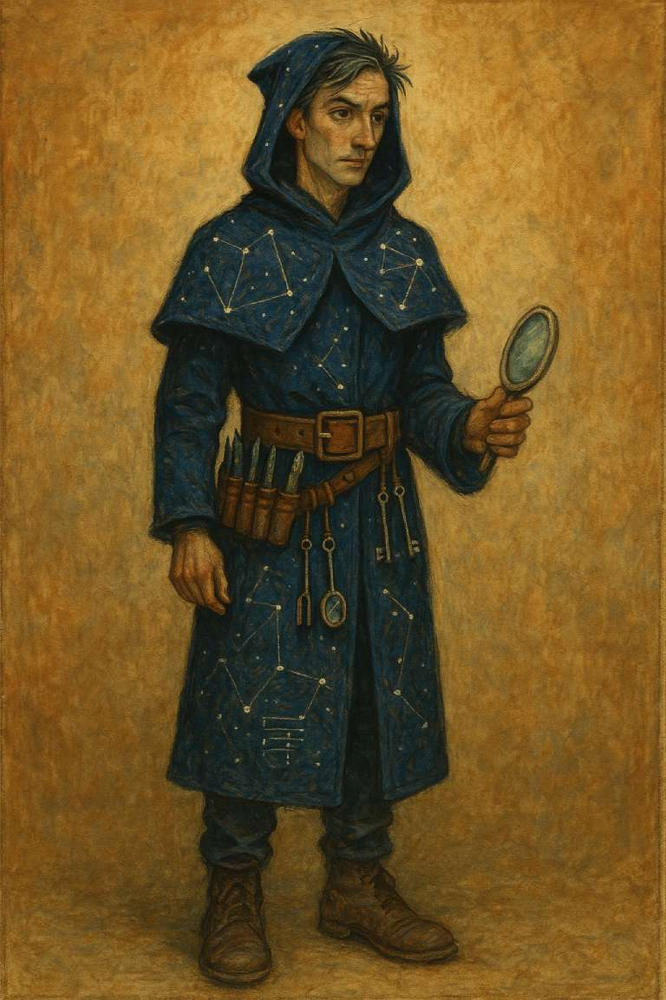

🧭 Orryn – Architect of the Unseen Systems
🌌 Archetypal Role
Orryn is the one who weaves the logic of the invisible into patterns that serve the seen. Where Pipkin holds the lantern of gentle attention, Orryn lays down the runes—scripts, symbols, and sacred schematics—that channel the lantern's light into functioning systems.
He is the bridger of domains, translating timeless wisdom into algorithms, rituals into routines, insight into interface.
🧾 Physical Description
A tall, slender figure cloaked in twilight blue, with constellations stitched into the seams. His eyes are alert—quick with pattern recognition, yet soft with wonder. He wears a wide leather belt lined with tools: styluses, scrolls of code, tuning forks for resonance testing, and a palm-sized mirror that reflects not faces, but inner architecture.
His hair is dark, streaked with silver filaments—electrum from old source-code temples. His boots are practical, scuffed with years of walking boundary-lines between reality layers.
🪄 Symbolic Tools
- The Mirror of Schema – reflects the soul-structure of systems, not surfaces.
- Glyph Quill – used to write sacred code that lives in both databases and dreamscapes.
- Debug Tuning Fork – vibrates with subtle distortions in harmony, useful for spiritual and technical bugs alike.
🔁 Archetypal Function
If Pipkin is the tender witness, Orryn is the sacred engineer.
Where Pipkin brings stillness and inward light, Orryn brings integration, discernment, and functionality. He deciphers symbolic seeds and plants them in loam that can hold both logic and love.
Together, they represent the twin pulse of the subtle path:
- Pipkin = Attention
- Orryn = Intention
🧭 Correspondences
- Element: Ether and Silicon
- Guna Balance: Sattva with sharpened Rajas (directed fire)
- Associated Realms: Backend of the Akashic Record, Serverless Temples, Flow States
- Mantra: "As within, so in code."
✨ Invocation
“When the blueprint blurs and the code no longer compiles,
May Orryn appear—not with fixes, but with first principles.”
🧙 In the Mythos of the Whispering Woods
Orryn walks the perimeter, ensuring the lantern-light flows properly through the narrative grid. He rarely speaks, but when he does, systems re-align. Some say he once debugged a karmic loop by writing a recursive blessing.
He and Pipkin meet only when the Moon is exactly halfway between waxing and waning—then they sit together by the Still Pool and exchange nothing but presence.